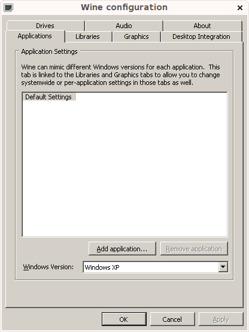
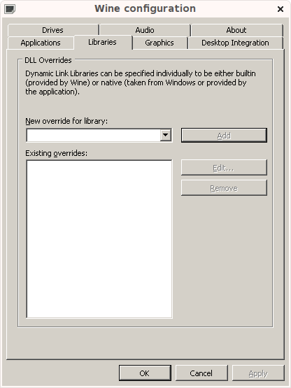
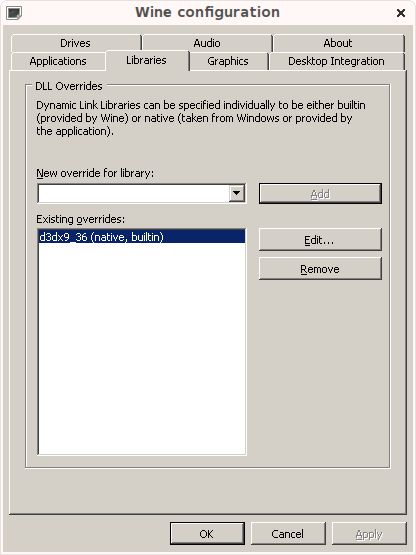

- Welcome to Touhou Wiki!
- Please register to edit. For assistance, check in with our Discord server or IRC channel.
Running in Linux and Mac OS X
For those of us who run Linux or Mac OS X as our only operating system, finding functional alternatives to Windows programs can be pretty hard. When we need to run Windows programs, the Wine project has long been a great emulation system that lets us do such a thing. Basically, it translates Windows functionality into the Linux equivalent to coding, so you can still play your Windows games, work in Photoshop, etc. under Linux and, to a certain extent, Mac OS X.
It's not perfect, however; running games from the Touhou Project on Wine is hit-or-miss, but it's possible. This article will explain how Wine works, and how to (maybe) play Windows Touhou games under Wine.
Before we start, this does require a little familiarity with the shell (or command-line interface). This Linux guide has a nice introduction to using the shell.
Installing Wine[edit]
Linux[edit]
- Arch Linux: See here
- Ubuntu and Debian: See Here
- Fedora: See Here
- SuSE: See Here
- Gentoo: See Here. Unmasking the git-fetching ebuild is recommend. Adding =app-emulation/wine-9999 ** to /etc/portage/package.keywords should do the trick. Do emerge -pv wine and check which version it wants to build (it should be app-emulation/wine-9999). Just be aware, building from Wine's Git repository might not actually work; the code is in constant flux.
Mac OS X[edit]
Using MacPorts
If you already have MacPorts installed with all dependencies, simply run $ sudo port install wine to install with all dependencies.
If you have yet to install MacPorts, refer to this installation instructions.
Using Homebrew
Go here and install if needed, then run $ brew install wine
Using Wine[edit]
Wine puts a hidden directory in your home folder, called .wine, which contains a full representation of a Windows folder hierarchy and miscellaneous library and system files. The .wine folder lives inside your home directory (~/.wine). Inside is another folder called drive_c, which is your Wine install's C: drive folder. If you browse inside this folder (~/.wine/drive_c) you'll probably quickly recognize it's contents from a standard Windows install.
Generally, your Linux distribution will have assigned Windows executable to automatically start within Wine, so double-clicking a Windows executable should generally just work. But if not, you'll have to invoke Wine from your terminal. To do this, navigate to the folder that contains the executable and then invoke Wine.
~ $ cd .wine/drive_c/Program\ Files/RandomProgram
~/.wine/drive_c/Program Files/RandomProgram $ wine program.exe
And that ought to start up your program.
Running Touhou games[edit]
Running a Touhou game is done the same way, only you might want to specify your locale while invoking Wine so it starts your game as a Japanese program to prevent some serious mojibake. This can be done by adding LANG="ja_JP.UTF-8" before executing Wine.
The example below took the installation of Double Spoiler and ran th125.exe which is the game:
~ $ cd .wine/drive_c/Program\ Files/上海アリス幻樂団/ダブルスポイラー
~/.wine/drive_c/Program Files/上海アリス幻樂団/ダブルスポイラー $ LANG="ja_JP.UTF-8" wine th125.exe
Note: If you are running the language patch version of the game (en_US for example), you won't need no specify this unless if your system locale isn't en_US.UTF-8, specify LANG="en_US.UTF-8" before the command. Same applies to other language patch as well
Running games as 32-bits version of Windows
Due to the fact that some games still requires to run as 32-bits installation of Windows and the latest version of Wine usually installs as 64-bits, users need to change WINEARCH to win32. This is necessary if you want to install some missing components as demonstrated in the section below. It is recommended to change the Wine directory (normally ~/.wine) to something else and set WINEARCH=win32 before running the game.
~/.wine/drive_c/Program Files/上海アリス幻樂団/ダブルスポイラー $ export WINEPREFIX="~/.wine32"
~/.wine/drive_c/Program Files/上海アリス幻樂団/ダブルスポイラー $ export WINEARCH=win32
~/.wine/drive_c/Program Files/上海アリス幻樂団/ダブルスポイラー $ LANG="ja_JP.UTF-8" wine th125.exe
Installing missing native Windows components[edit]
Although most Touhou games should run out of the box with the recent development of Wine, some games might experience instant crash when try to running through Wine. This is mostly because Wine cannot emulate all of the Windows libraries/DLLs therefore leads to missing libraries and such which leads to crash. Before running the game, user should make sure that all necessary components are installed. There are some ways to achieve this:
Using Winetricks
Winetricks is a helper script to aid in installing Windows components such as dlls, Windows runtime library. With winetricks, all installation of dlls and libraries can be done with merely a command.
Start by installing Winetricks by following the installation instruction provided here. After installation. We will install Execute this command to install "d3dx9_36.dll"
~ $ winetricks d3dx9_36
Winetricks also have a GUI, which can be open by executing winetricks in the Terminal.
Note: Some libraries such as dotnet40 requires to install in a 32-bits environment.
Copy the .dll from the Windows installation folder
Another way to temporarily fix a partially-functioning DLL is to replace it with the original file from a Windows install. Here is the way to do it.
Note: This was done on a 32-bit Vista installation mounted at /mnt/vista32.
First off, to copy the file. Wine's Windows folder is in .wine/drive_c/windows.
~ $ cp /mnt/vista32/Windows/System32/d3dx9_36.dll .wine/drive_c/windows/system32/
This might be all you need for the new DLL to work. To make sure programs see it, we'll configure it within Wine. Wine has a configuration utility called winecfg; run it from your terminal and you'll see this:

Click the "Libraries" tab:

Under "New override for library", type d3dx9_36, and click "Add" then "Apply":

Now you can click "OK" to exit the utility, or peruse around the other tabs and settings. One issue with loading native Windows DLLs is that they may require original low-level Windows DLLs (i.e. ntdll.dll) that Wine is emulating, and might not work. These are the core DLLs that Wine is emulating and cannot be replaced with native Windows DLLs, else you'll break your Wine folder.
Wine in Mac OS X[edit]
Wine works similarly in OS X compared to Linux. One issue that Mac users may encounter is incredibly slow 3D graphics performance; this is due to Apple's X11 implementation not supporting hardware OpenGL in older versions of OS X (Tiger and below). If you encounter this, you may want to bite the bullet and upgrade.
PC-98 Games[edit]
Various emulators such as Neko Project II, T98-Next, and Anex86 all work pretty well under Wine in order to play the PC-98 Touhou games. If you're into two-player Phantasmagoria of Dim.Dream with a gamepad, JoyToKey also works under Wine!
There's even a native port of Neko Project II for Linux and Mac OS X called Xnp2. However, there are currently some sound problems that need to be investigated; using np2fmgen in Wine is recommended instead.
Using VSync patches (and possibly other DLL-based patches) on Linux[edit]
Note: Wine 1.6 seems to run the VSync patches natively. Only follow these instructions if you're using an older version of Wine, or if you get the Japanese error message that translates to "DLL Injection Failed".
The VSync Patch (aka vpatch) disables VSync in the Touhou games to reduce input delay. It can also produce minor speedups, especially in Embodiment of Scarlet Devil.
Running vpatch.exe in Wine cannot remove all input delay, as there appears to be some inherent input delay caused by running Touhou in Wine in the first place.
Normally, when vpatch.exe is run in Wine, a Japanese error message appears which essentially translates to "DLL Injection Failed". This is because Wine by default doesn't have the capability to modify running programs, which is what vpatch.exe requires. To give Wine this capability, run the following command in a terminal using sudo, su, or root:
setcap cap_sys_ptrace+epi /usr/bin/wineserver
The directory for wineserver might vary based on the Linux distribution.
If no errors appear, the command was successful, and vpatch.exe should now run properly under Wine. Be sure to exit the terminal after running the command; using Wine with root privileges is bad.
You can verify that vpatch.exe is working by loading a replay and holding the Shift key. If the FPS decreases from 60FPS to 30FPS, then vpatch.exe is working normally.
This fix should also theoretically enable the use of other DLL-based patches, though none have been tested.
Note that this fix will give all applications running under Wine, including potentially malicious applications, the capability to modify running programs. If you're concerned about this, the following command will revoke the added capability:
setcap -r /usr/bin/wineserver
Gotchas, Troubleshooting[edit]
- There are issues with joysticks. If you plug in your joystick while your Touhou game is running, it probably won't notice it. Make sure it's plugged in and working before running your Touhou game.
- Installing English patches has been known to cause otherwise troublesome games to start working better.
- For Scarlet Weather Rhapsody and Touhou Hisoutensoku, see here (SWR/HSTS Wiki).
- Games running at triple or even quadruple times normally on danmaku games which made the game running faster than normal is common when running with Nvidia GPU. Try to limit the FPS to 60 by enable VSync or adding VBLANK_MODE=1 before using primusrun or optirun if you are using a hybrid GPU setup.
The Wine developers are constantly adding and fixing functionality, so while things are still iffy with Touhou games they're definitely improving. See below for a list of the current Touhou bugs on the Wine Bugzilla.
Outside the official games...[edit]
Touhou doujin games are also hit-or-miss.
Age of Ethanols is a .NET game, so it should run natively in Mono. However, it's coded in part C#, part C++, so it won't work without installing .NET and whatnot from within Wine.
Moedan works fine in Wine (Wine 1.7.20, MacOSX)
Touhou Danmakufu 0.12m may or may not work - it worked better in older versions of wine, but crashes on start due to DirectX issues in later versions. ph3 works fine with the exception of .mp3 files not running due to copyright issues on .mp3 files and the consequent inability of Wine to run them as they would normally be run. (Wine 1.7.27, MacOSX)
Labyrinth of Touhou works fine in Wine. (Wine 1.6 RC-1, MacOSX)
Touhou Games in the Wine AppDB (appdb.winehq.org)[edit]
[ EoSD] [ PCB] [ IaMP] [ IN] [ PoFV] [ StB] [ MoF] [ SWR] [ SA] [ UFO] [ HSTS] [ DS] [ FW] [ TD] [ HM] [ DDC] [ ISC] [ ULiL] [ LoLK][ AoCF][ HSiFS]
Wine Bug Status (bugs.winehq.org)[edit]
Official Games
421 (EoSD - TD) Bad Text Part 2, DIB Engine Implementation: Now Implemented
13297 (EoSD - FW) Missing D3DXCreateTextureFromFileA in d3dx9_36.dll: Now Implemented
13490 (SWR, Patchcon) Nvidia video driver FPU bug, improper rounding causing game crash: Fixed in Nvidia drivers 275.19
13554 (IaMP) Broken config.exe (16-bit app), comctl32.dll not properly imported: Fixed as of Wine 1.7.6
15146 (MoF, TD) Bad Text Part 1, Mishandled rgb444 Depth Conversion: Now Implemented
18232 (SA, UFO) Huge framerate drop when OffscreenRenderingMode=fbo (Intel i945 graphics chips): Driver issue resolved
18394 (PoFV) Patching to 1.50a breaks game, problems with dpnet.dll: Fixed as of Wine 1.7.6
19106 (MoF) Improperly rendered backgrounds: Reported fixed as of Wine 1.4-rc6
24206 (HSTS) Ending network game causes hangup: Reported fixed as of Wine 1.5.27
18440 (SWR) Menu/Game select crashes, problems with GetGlyphOutline in d3dx9_33.dll: Fixed as of Wine 1.7.29
36882 (MoF, DDC, ISC) Certain Touhou Games (10, 14, 14.3) run at 20 FPS rather than 60: Fixed as of Wine 1.7.36
30538 (SA - TD) Touhou 11, 12, and 13 are incredibly slow with Intel, Nouveau, and Nvidia drivers
20080 (PCB, ISC) Menu cursor moves around by itself
25857 (HM) Needs ID3DXEffectImpl_*Pass calls implemented Fixed as of Wine 2.7
33760 (DDC) Jagged edges on most text and art in the Touhou 14 demo
33761 (MoF - TD) Touhou 10 and up have aliased dialogue text
Fangames
30212 Koumajou Densetsu needs Scripting.Dictionary implementation: Fixed as of Wine 1.7.38
34314 Touhou Danmakufu 0.12m crashes on start (DMUSIC_CreateMidiOutPortImpl is a stub)
34884 Touhou Danmakufu 0.12m's font becomes distorted in Wine 1.7.5
Using Parallels and VMWare Fusion (Virtualization)[edit]
Another alternative that works very well is to use Parallels Desktop to run the games.
Parallels Desktop version 5.0 runs the main series games very well: All of the Windows danmaku games except for Perfect Cherry Blossom run without slowdown on a MacBook Pro. PCB appears to suffer from slowdown for unknown reasons.
Update: Version 1.00a of Ten Desires can be significantly laggy. Patching to 1.00c resolves all issues and will run the game at 60FPS.
It is important to run the games in full screen, and it is better to use the zoom function to bring the game screen to full screen, at least on a MacBook Pro. Running the games in windowed mode often results in slowdown, and the computer appears to have real difficulties in displaying 640×480 natively (the games will run at 30fps). You can run them in 720×480 just fine, though.
Activate the zoom function through the "Trackpad" pane in System Preferences, and zoom in by putting the mouse in the middle of the screen and holding control and scrolling up with two fingers.
The fighting games (SWR and Soku) have no slowdown during matches, but do have a serious delay while loading for the match (close to a minute). It's been suggested, but not yet confirmed, that placing the games on the virtual C: drive, rather than on the OSX desktop or other location in OSX, may clear this out; Parallels treats the Mac's hard drive as a network drive, which may slow access. Netplay has yet to be tested for either the fighters or for Phantasmagoria of Flower View.
If your SWR/Soku display looks strange when run in full screen (usually, a bar at the bottom and right of the screen that displays the desktop), set the game to run in Windowed mode, exit out, and restart the game. Then change it back to full screen in the menu.
The PC-98 games can be run through anex86 without difficulty (so yes, emulation within emulation virtualization). There's a PC-98 emulator for OSX, but it has not been updated for several years and does not appear to accept the Touhou games.
The following fan games have been confirmed to run fine under Parallels Desktop 5 using Windows XP on a MacBook Pro:
- MegaMari
- PatchCon
- Genius of Sappheiros (with or without English patch)
- Koumajou Densetsu: Scarlet Symphony (both games)
- Gensou Tansaku Nitroid!
The following do not run under Parallels 5, have severe slowdown, or suffer from fatal glitches, although in some cases this may be due to the graphics card (apparently, some of the fangames don't communicate properly with NVIDIA cards.):
- Super Marisa World (runs at 30FPS)
- Mountain of Faith Phantasm (runs at 30FPS)
- Sengou Gensokyo (cannot input commands during battle, otherwise 100%)
- Labyrinth of Touhou (either will not display, or overwhelming glitches)
- Touhou Soccer Moushuuden (no display)
For unknown reasons, VMWare Fusion will not run the Touhou games properly The games have not yet been tested with Parallels Desktop 6. Stay tuned for information.
Playing Touhou Games on Steam[edit]
With the release of some title such as Hidden Star in Four Seasons or Antinomy of Common Flowers on Steam and the support of Proton. Playing Touhou games on Steam has become easier since now you can use the built in compatibility layers that Steam provided.
Note: Proton is a new project and is likely to have bugs, users are encouraged to report any bug they found with games to the project Github Repository. Note that if any game were proved to successfully run on Wine it might often as well run on Proton.
Installation[edit]
To enable Proton for all game please go to Steam -> Settings, a section called Steam Play will appear in the bottom of the sections list, navigate to the section and check Enable Steam Play for all titles then you are good to go.
After that you can open your Library and select the game, Proton will do the rest of the job for you.
Game compatibility can be found here: https://www.protondb.com/.
Troubleshooting[edit]
- Some user might experience game crashing with Proton right when starting up without it prompting to install any drivers (e.g Proton need to install DirectX initially if you are running HSiFS for the first time). If that is the case, consider using the flatpak version of Steam.
- There is also some problem regarding launching games that come from ntfs partitions. This is confirmed as a bug, a workaround for this is to mount the partition using ntfs-3g rather than ntfs.
Another Way of Running Touhou Games on Mac[edit]
There is an easier way of running Touhou Games on a Mac. You need a Mac OSX with version 10.6.8 or later, X11, and Winebottler. 11 is available at the iTunes Store, at a cheap price, or free if you get older versions.
You can download Winebottler here. Press the free download button, and a Disk Image should appear on your desktop after download. Drag the application Wine and Winebottler into your applications folder.
Now, double click the Touhou game .exe. A dialogue box should pop up that says "What would you like to do with the file?" Below that should be two options:
- Run directly in /Users/((Homefoldername))/Wine
- Convert to simple OS X application bundle.
Click on the first option. DO NOT CLICK THE SECOND ONE. The game will not run and your Wine will crash.
It should automatically open up X11 and run the game. No coding is required.
Glitches[edit]
- Most of the Touhou games, especially the 2nd gen Windows games, might experience minor to unacceptable slowdown on Intel Integrated Graphics (needs to be confirmed; does this slowdown also occur on dedicated graphics cards?)
EoSD, PCB, and Imperishable Night will automatically glitch if you click the screen after loading the game. You controls will start going wonky and most likely you will have to quit Wine and X11. If you run the games for a prolonged period the in-game music will stop, and no matter how many times you quit Wine and start up the game again, the music will be gone.Controls going wonky can be resolved by opening the game's custom.exe and checking the box with the word "DirectInput". Also, the audio bugs should be fixed as of PulseAudio 1.0 & Alsa 1.0.25 (source)- Wine 1.4 does not exhibit any issues when the game runs at full screen.
Out of the 3 fighting games, only Immaterial and Missing Power works. SWR and Soku will appear as a black screen before Wine crashes.TD will not work on Wine. I have a feeling that nothing after TD will work, since you will have to install some Windows software before playing it.TD seems to work in Wine 1.4, though my old laptop is physically unable to run the 2nd gen windows games at more than 15fps.- In-game English dialogue of Mountain of Faith, Subterranean Animism, Undefined Fantastic Object and Fairy Wars will not appear. Of all the Windows games, in-game Japanese dialogue will appear as code.
- All of the games will run on Normal FPS (that is, 60 or above), unless you have CPU fan wasting applications open.
- There may be a glitch where after opening the game PoFV, IN will no longer work.
(Note that these glitches are attributed to running of games using Winebottler (only) and X11 (the section above) I haven't tried the code way to open up games. If there is a new, improved version of Winebottler that works just like Wine, please tell me!)